现场演示脚本
讲解词 · 操作动线 · 预期数据
00演示前 5 分钟检查
先确认底座活着，再重置到干净态。全程不依赖外部 Pinpoint / Prometheus / CMDB / ES 服务。
# 三个容器都得是 Up cd ai-ops/platform docker compose ps # 后端健康：storage / topo / mcp / now curl -s http://127.0.0.1:8080/api/health # 四上游探活，应为 17 / 36 / 5 / 5 curl -s http://127.0.0.1:8080/api/mcp/probe | python3 -m json.tool
python3 backend/scripts/seed_demo.py
rm -rf backend/data/{alarm_event,diagnosis_session,ticket,inspection_run,inspection_report,audit_run,audit_finding,change_plan,degradation_scan,biz_scan,quality_report,quality_scan,relation_*}
docker compose restart mock-mcp backend
- /dashboard
- /alert-center
- /diagnosis
- /tickets
- /op-topology
- /inspection
- /audit
- /biz-monitor
- /degradation
- /quality
- /relations
- /knowledge
- /metrics
先点「手动轮询」，再点「扫描劣化」。首轮轮询从 mock 拿到 4 条 Prometheus 告警（HighErrorRate、TargetDown 两条严重，MySQLReplicationDelay、HostHighCPU 两条告警）；告警中心里的 54 条是巡检 37 + 劣化 9 + Prometheus 4 + 业务 3 + 质差 1 的合计。页面每 15 秒自动刷新，重复扫描还会继续累加，现场只对照量级。
0120 分钟时间分配
五幕递进：看见 → 发现 → 定位 → 处置 → 度量。发现环节内容最多，占 6 分钟；其余按每分钟一个结论控制节奏。
02数据怎么流动
如果只记一张图，就记这张：四个上游的数据 → 三类检测 → 统一排障 → 工单与知识库 → 度量。
flowchart LR A["pinpoint
调用链"] --> G["MCP 网关
63 个工具"] B["prometheus
指标"] --> G C["CMDB
资产"] --> G D["ES
日志"] --> G G --> E1["告警中心"] G --> E2["主动巡检"] G --> E3["资源稽核"] E1 --> F["自动排障
证据链"] E2 --> F E3 --> F F --> H["工单"] F --> I["知识库"] H --> J["拓扑着色"] F --> K["考核指标"]
演示环境只是把四个 MCP 地址指向本地 mock；平台代码里没有 mock 分支，切真实环境只改 4 个地址。
第一幕前开场 · 30 秒
站在 /dashboard，先给结论，不讲功能。
“今天演示的不是一个看板，而是一条闭环：四个上游系统的数据，怎么变成风险、变成根因、变成工单，最后变成可度量的效率。整个过程本地就能跑，断网也能演示。”
第一幕 · 2 分钟全局认知
- 上游探针 4/4 在线，pinpoint 17 / prometheus 36 / cmdb 5 / es 5
- KPI：当前告警 53 条（严重 10 · 告警 43）、近 24h 自动建单 15 张
- 拓扑快照 2026-10-08：245 个应用、341 个中间件实例、1418 行依赖
- 健康检查
storage / topo / mcp / now全部正常
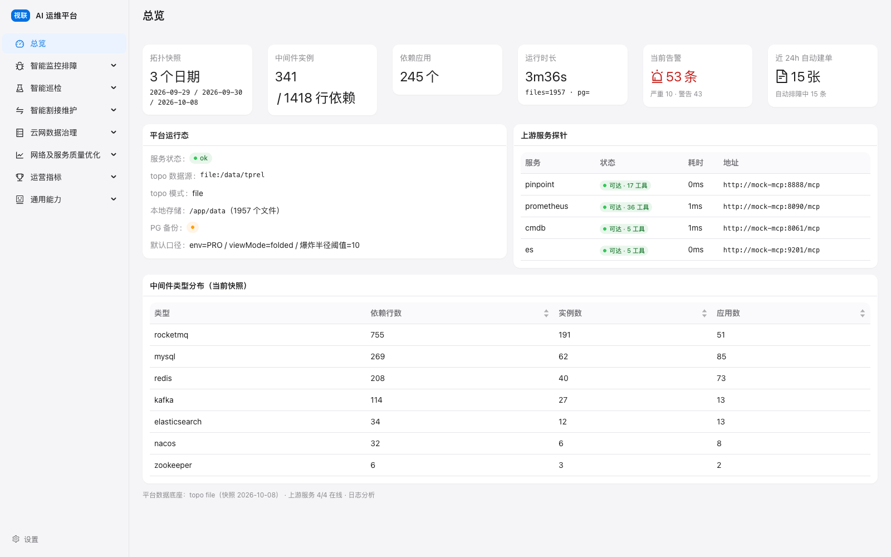
/dashboard
看哪里：① 右上「上游服务探针」四个绿点，后面跟着 17 / 36 / 5 / 5；② 左下「当前告警 53 条（严重 10 · 告警 43）」；③「近 24h 自动建单 15 张（自动排障中 15 条）」；④ 底部「中间件类型分布」与运行时长，证明是刚重启的干净环境。
“左上角是业务结果：告警量、排障量、工单量、自动化率；右上角是底座健康度——4 个上游全部在线，说明后面的每个结论都有真实数据来源。左下角这 53 条不是硬编码，是刚才轮询和扫描真实入库的结果。”
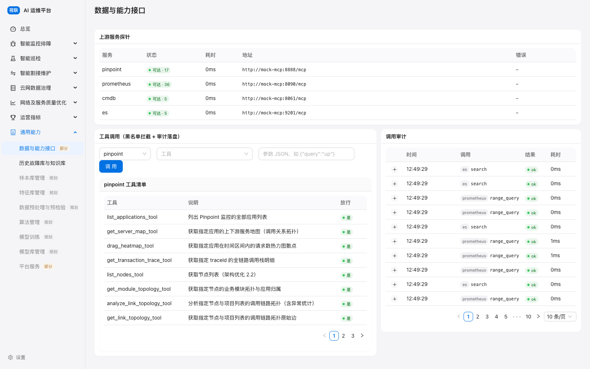
/mcp
看哪里：① 顶部「上游服务探针」四行，耗时都是 0 ms，说明调用是本地 mock，不依赖外网；② 中间「工具调用（黑名单拦截 + 审计落盘）」按上游切换，pinpoint 一屏 10 个工具、分 3 页；③ 右侧「调用审计」每条调用都有时间、结果和耗时，刚才排障用的 search、range_query 都能追到。
“平台没有把能力写死。生产环境这四个服务有多少接口，这里就展示多少——pinpoint 做调用链、Prometheus 做指标、CMDB 做资产、ES 做日志。演示环境只是把这四个地址指向了本地 mock。右边这列审计记录说明：每一步都是真实调用，不是页面上的假数字。”
第二幕 · 6 分钟主动发现
三个入口，分别回答“已知问题”“主动找问题”“账实是否一致”。
HighErrorRate 或 TargetDown 那条告警的抽屉。- 首轮轮询新增 4 条：
HighErrorRate、TargetDown（critical），MySQLReplicationDelay、HostHighCPU（warning） - 总量 54 条 = 巡检 37 + 劣化 9 + Prometheus 4 + 业务 3 + 质差 1；顶部统计为严重 10 / 告警 43 / 已恢复 1
- 每行带「排障状态」和「置信度」，已建单的行显示
已建单+ 优先级 - 抽屉时间线：入库 → 准入 → 自动排障 → 工单
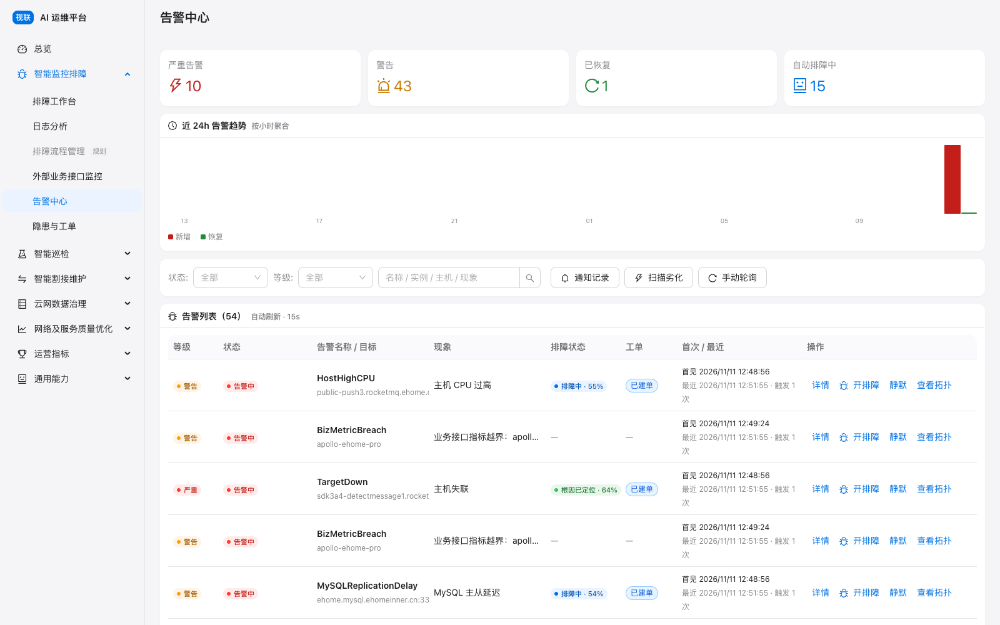
/alert-center
看哪里：① 顶部四张统计卡「严重告警 10 / 告警 43 / 已恢复 1 / 自动排障中 15」；② 工具栏右侧「手动轮询」和「扫描劣化」，中间那行小字写明「自动刷新 · 15s」；③ 列表里的 TargetDown 行显示「根因已定位 64%」和「已建单 P2」，说明采集、排障、建单是一条链；④ 右上角「通知记录」可看出站告警。
“点一次手动轮询，后台做了五件事：拉取、按指纹入库、四道准入过滤、自动开排障、达到阈值自动建单。注意列表里 TargetDown 指向的主机，和后面稽核查出来的是同一批——告警和稽核能互相印证。”
“这一屏有 54 条，不是轮询造出来的：Prometheus 只贡献 4 条，其余 50 条是巡检、劣化、业务监控、质差分析回流的。也就是说，平台把四类信号汇到了一个入口。”
topo、环境 PRO；跑完打开批次详情，看风险明细抽屉。- 批次统计：
items=102, risk=37, notTriggered=62, noData=2, notApplicable=1 - 风险按规则分页：TOP0_T10 日志错误（ES）、TOP0_T11 主机指标阈值等，级别 P1 / P2
- 37 条风险全部回流告警中心，来源标记为
inspection
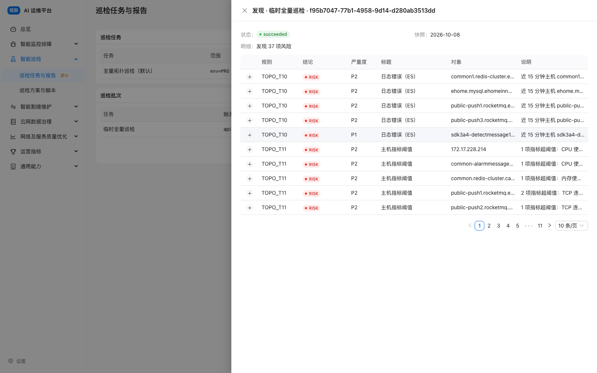
/inspection
看哪里：① 抽屉标题「发现 · 临时全量巡检」和右上角「共 37 项风险」；② 每条风险都有规则名（TOP0_T10 日志错误（ES）、TOP0_T11 主机指标阈值）、对象、级别 P1/P2；③ 底部翻页共 11 页，说明是按「规则 × 对象」逐条展开，不是一句汇总。
“告警是被动等来的，巡检是主动找出来的。11 条规则覆盖拓扑、主机、中间件、日志，跑一次 102 项，37 项有风险、62 项正常。这些风险不是停在报表里，而是继续走排障和建单。”
maxHosts=20；打开批次详情，重点讲 C1 / C4。| 检查项 | 含义 | 结果 |
|---|---|---|
| C1 存在性 | 拓扑引用了、CMDB 查无此机 | 2 条 P1 |
| C2 状态一致性 | CMDB 非在线但仍有应用依赖 | 2 条 P1 + 16 条一致 |
| C3 反向孤儿 | CMDB 在线、拓扑没引用 | 7 条 P3 |
| C4 指标佐证 | CMDB 说下线，Prometheus 还有没有心跳 | 1 条 P1 + 1 条一致 |
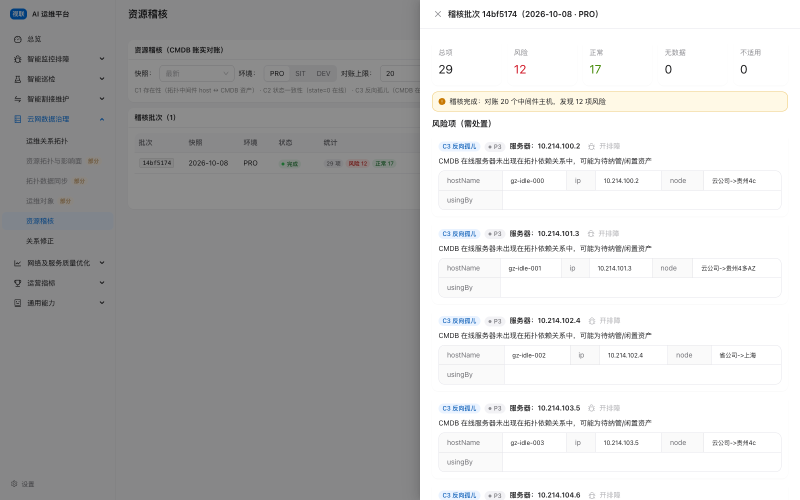
/audit
看哪里：① 顶部批次卡「总项 29 / 风险 12 / 正常 17 / 无数据 0 / 不适用 0」，右上角「稽核完成：对照 20 个中间件主机，发现 12 项风险」；② 中间风险列表里 C3 反向孤儿 P3 连续出现 10.214.100.2 / .3 / .4 / .5 / .6，说明 CMDB 有、拓扑没引用；③ 每行都给出「云公司→贵州4c」的归属和修复建议。
“稽核解决的是账实不符。C1 是拓扑引用了、CMDB 查不到；C2 是 CMDB 说报废了、应用还在依赖。最有说服力的是 C4：CMDB 标了报废，Prometheus 还在采心跳——两个系统互相打脸，这时候不是改数据，而是要人去确认到底哪边是真的。”
“这 12 项风险里，C3 占了 7 项——CMDB 里在线、拓扑里没人引用。这类资产要么是漏纳管，要么是该清退，机器只能指出来，不能替人决定。”
- 业务监控：8 条规则中 apollo 3 条全部越界（错误率 8.0% > 5%、请求量 1200 < 2000、TP99 1.6s > 1.0s），首轮
breaches=3, created=3；另 5 条背景规则监控 cloud-ehome 等应用，正常值不越界。再扫一次页面显示「本轮新建 0 条」（同一指纹不重复建单） - 指标劣化：
scanned=10, degraded=9，生成 9 条隐患告警，本轮自动排障 5 - 质差分析：不用选应用，页面默认展示最近一次报告
apollo-ehome-pro，degraded=true、质量分 100.0%、根因database / ehome-pro.mysql.ehomeinner.cn:13303
① 业务监控：规则越界就报，不等阈值告警
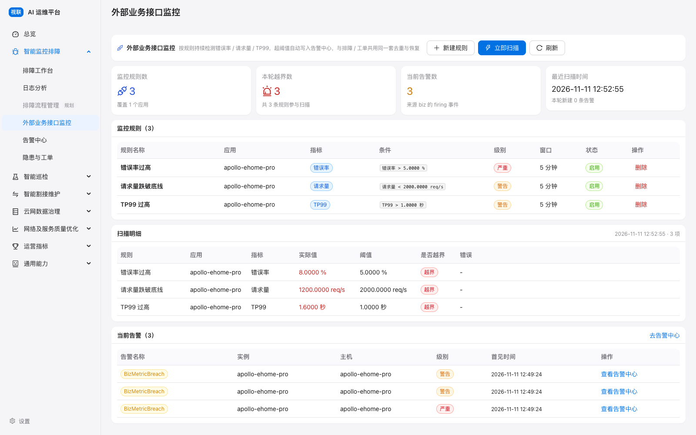
/biz-monitor
看哪里：① 顶部四张卡「监控规则 8 / 本轮越界 3 / 当前告警 3 / 最近扫描 …」；② 规则表里阈值写得清清楚楚（错误率 > 5%、请求量 < 2000、TP99 > 1s），另有 5 条背景规则覆盖 cloud-ehome / cloud-video / auth 等应用；③ 中间「扫描明细」apollo 三条实际值 8.0% / 1200 / 1.6s 全部标红越界，背景五条灰色不越界；④ 底部「当前告警」3 条 BizMetricBreach，2 条警告 + 1 条严重。（注：现有截图为早期 3 条规则版本，演示前需重截）
② 指标劣化：看趋势，不等它变成故障
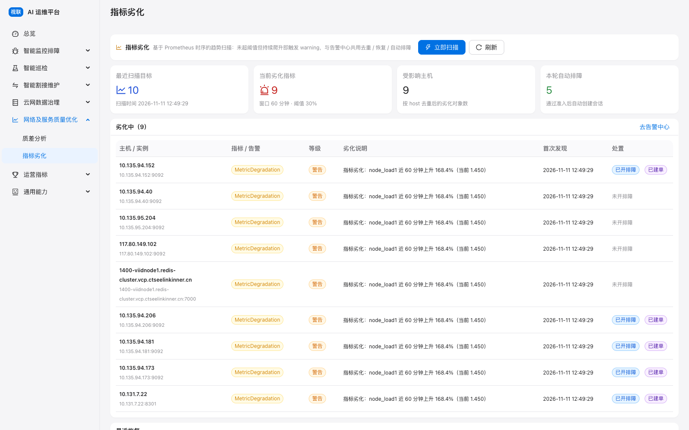
/degradation
看哪里：① 顶部四张卡「扫描目标 10 / 当前劣化 9 / 受影响主机 9 / 本轮自动排障 5」，窗口 60 分钟、阈值 30%；② 每条劣化都写出指标与幅度，例如 node_load1 近 60 分钟上升 168.4%、当前值 1.450；③ 右侧「处置」列能看到哪些已开排障、哪些已建单、哪些还没动。
③ 质差分析：把“慢”拆成可归因的分数
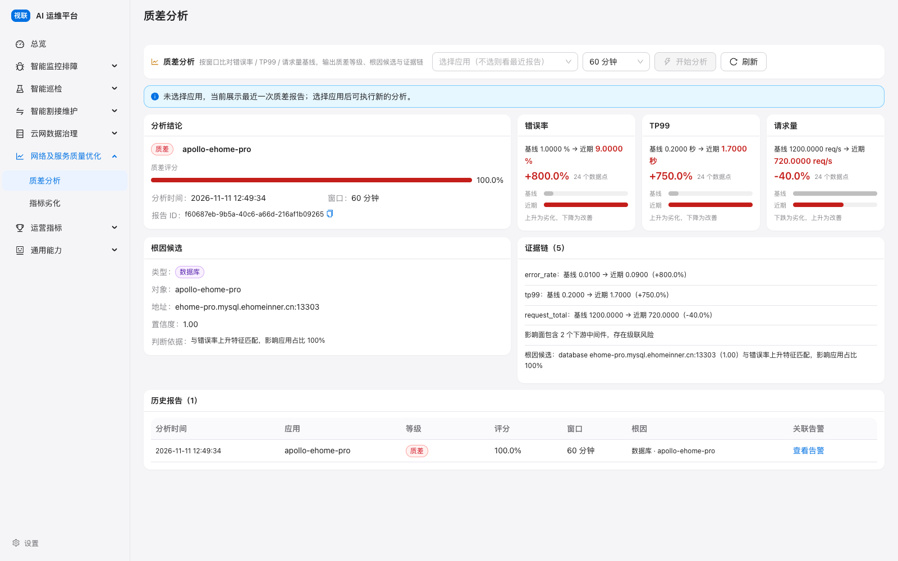
/quality
看哪里：① 页面顶部提示「未选择应用，当前展示最近一次质差报告」，所以现场不用点任何筛选；② 三张对比卡：错误率 1% → 9%（+800%）、TP99 0.2s → 1.7s（+750%）、请求量 -40%；③ 根因候选「数据库 / ehome-pro.mysql.ehomeinner.cn:13303 / 置信度 1.00」；④ 下方证据链 5 条，并提示影响面含 2 个中间件级联风险。
“除了阈值告警，还有三类更早的信号：业务指标越界、指标趋势劣化、质量分下降。它们的共同点是——在用户投诉之前就能发现。”
“业务监控看的是‘现在越没越线’，劣化看的是‘趋势是不是在变坏’，质差看的是‘用户体感已经差到什么程度、该找谁’。三张图讲完，再回到告警中心，就能看到它们都变成了同一种可处置的事件。”
第三幕 · 4 分钟定位根因
- 来源健康度 4 条：
Prometheus ×3 + ES ×1 - 根因：
存在与目标相关的活跃告警（待人工确认） - 顶部横幅提示「当前目标存在 4 条活跃告警」，目标应用
apollo-ehome-pro - 工单已自动创建，严重级
warning - 讲“0.8 以上”即可，置信度随上游告警条数浮动
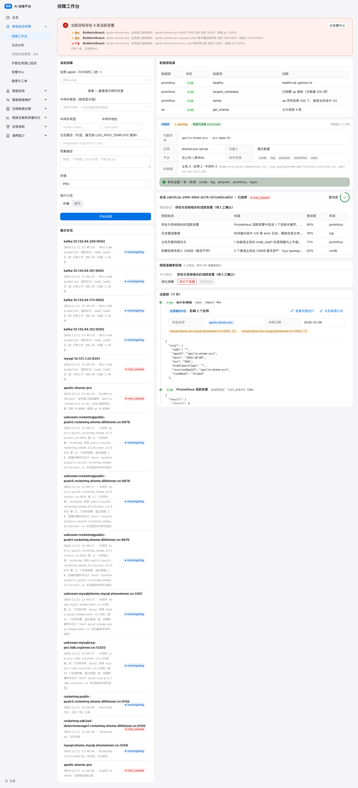
/diagnosis
看哪里：① 左侧「证据链」共 11 步，全部打勾（拓扑影响面 → 活跃告警 → Prometheus 指标 → CMDB 资产 → 调用链 → ES 日志 …）；② 右侧「结论」卡：root_caused、根因文字、置信度 0.85；③ 结论下方「来源健康度」四条，Prometheus 与 ES 都是 4/4；④ 顶部横幅「当前目标存在 4 条活跃告警」。长图已裁掉下半部分，现场向下滚动可看到每条证据的原始返回。
“这 11 步不是动画。每一步都是一次真实的 MCP 调用：先看拓扑影响面，再查 Prometheus 指标和主机存活，然后去 CMDB 核对资产状态，接着拉 Pinpoint 调用链，最后用 ES 日志做取证，规则引擎给结论。每一步都有来源、有数据、有健康度，所以结论可以被人复核，而不是大模型一句话。”
“置信度 0.85 不是拍脑袋，是证据覆盖度和来源健康度算出来的。低于阈值会停在 investigating，不会硬给结论。”
第四幕 · 4 分钟处置闭环
- 工单总数 15 张（P1 1 张 + P2 14 张），随扫描会继续增长
- 状态全部
待处理，置信度 42%–60% - 来源列显示告警指纹前缀，点「去原会话」可回到排障证据链
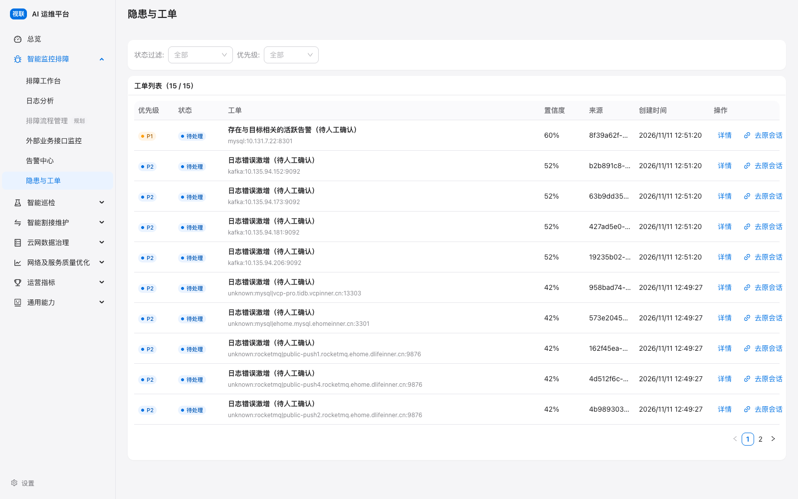
/tickets
看哪里：① 标题旁「15 / 15」；② 第一行是唯一的 P1 · 待处理，其余 14 张是 P2；③ 「置信度」列 42%–60%，来自排障会话；④ 「来源」列是告警指纹前缀，「操作」里的去原会话能跳回证据链。
“根因一出，工单自动带着证据链生成，处理人不用再去问‘你依据什么’。状态从 open 到处理中到已解决，全程留痕。”
- 来源标注「Apollo 定时同步」，快照日期 2026-10-08
- 底部状态条：排障中 7、工单待处理 3
- 绿色为应用节点、橙色为中间件节点，中间件标签带「被 N 个应用依赖」
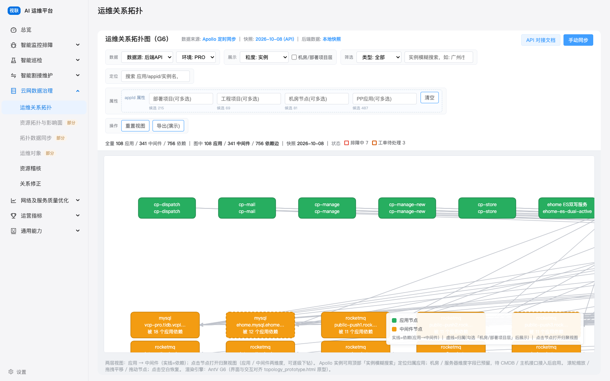
/op-topology
看哪里：① 顶部汇总「108 应用 / 341 中间件 / 756 依赖」和快照日期；② 图里橙色菱形是中间件（mysql、rocketmq），旁边标着被多少应用依赖，一眼能看出爆炸半径；③ 右上「筛选 / 全部」可快速定位单个应用；④ 底部状态条「排障中 7 / 工单待处理 3」，和工单页、告警页对得上。
“排障中和工单待处理，直接反映在全局拓扑上。看到的不再是一张静态架构图，而是一张‘哪里有事、影响到谁’的动态图。中间件节点旁边的依赖数，就是故障的爆炸半径。”
- 首轮
orphans=7, created=7；二次扫描created=0, skipped=7 - 统计条：待处理 7、已通过 0、已执行 0、已驳回 0；可自动修正 0、仅人工 7
- 审批通过后，「执行修正」按钮变为禁用，提示「该建议无法自动修正，请人工确认纳管或清退」
- 强行调接口
POST /api/relations/suggestions/:id/apply返回 400；修正留痕为空——没有自动改底座
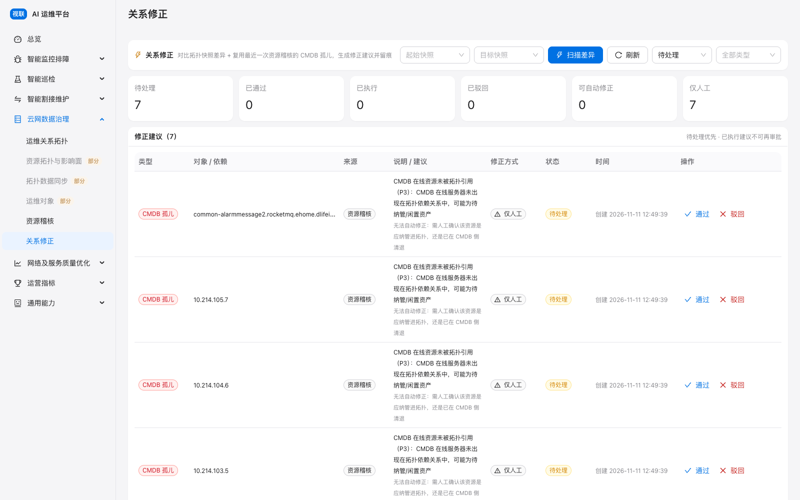
/relations
看哪里：① 顶部统计「待处理 7 / 已通过 0 / 已执行 0 / 可自动修正 0 / 仅人工 7」；② 表格 7 行全部是 CMDB 孤儿，修正方式列写「仅人工」；③ 操作列只有「通过 / 驳回」，没有「执行修正」，因为这类资产必须人工判断；④ 行内还能看到归属与建议动作。
“这里刻意不让机器自动改关系。机器只负责给建议，人审批后才能执行；孤儿资产连自动执行都不允许，必须人工确认是纳管进拓扑，还是从 CMDB 清退。刚才按钮变灰不是功能坏了，是治理边界。”
“可自动修正 0、仅人工 7，这个数字比‘自动修了 7 条’更值得讲——平台知道哪些能自动做、哪些必须人来做。”
total=14, apps=1, reviewed=1, accuracy=100.0- 列表置信度 0.60–0.86，其中 1 条已标注为「准确」
q=告警&limit=5命中 5 条；相似案例按分数排序
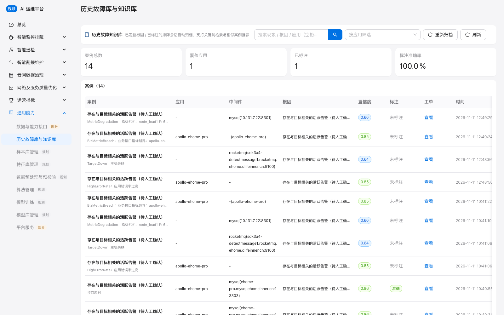
/knowledge
看哪里：① 顶部四张统计「案例总数 14 / 覆盖应用 1 / 已标注 1 / 标注准确率 100.0%」；② 搜索框输入「告警」，列表按相关度返回；③ 每行都有应用、中间件、根因、置信度、标注状态和关联工单；④ 点开案例可看到完整证据链和相似案例推荐。
“一次排障结束，经验自动归档。下次遇到相似症状，先看历史案例和证据链，不用从零查起。知识不是靠人写文档，是从闭环里长出来的。”
“标注准确率只统计已经人工标注过的样本，目前 1 条、100%。样本少的时候这个数字意义有限，但口径是清楚的——只算人确认过的。”
第五幕 · 2 分钟度量与收尾
- 三张达标率卡全部 100.0%：1 分钟发现（15 个样本）、5 分钟定位、10 分钟闭环
- 自动化率：告警自动开排障 27.8%（15 / 54）、自动建单 100%（15 / 15）、定位成功率 100%
- 巡检自动化执行率 0.0%：本次是手动临时巡检，不属于 cron 计划任务
- 根因准确率 0.0%：口径是「已标注样本的准确率」，当前已标注 0 个；知识库那条标注不计入该口径
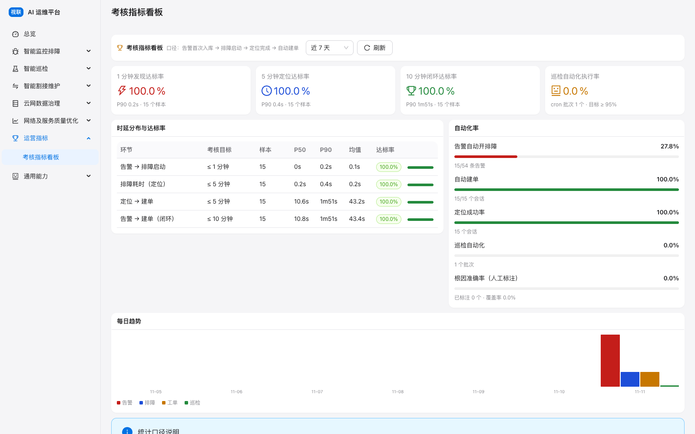
/metrics
看哪里：① 顶部三张卡「1 分钟发现 100.0% / 5 分钟定位 100.0% / 10 分钟闭环 100.0%」，括号里是样本数 15；② 中间「时延分布」四条每档都写样本数和占比；③ 下方「自动化率」：告警自动开排障 27.8%（15/54）、自动建单 100%（15/15）、定位成功率 100%；④ 巡检自动化 0.0% 和根因准确率 0.0% 都标了原因，现场按下面的口径解释。
“最后回答一个问题：这套东西到底有没有用。1/5/10 分钟达标率看发现和定位速度，自动化率看机器替人做了多少，每日趋势看是在变好还是变差。到这里，‘发现—定位—处置—度量’就闭环了。”
“两个 0% 要主动说明：巡检执行率是计划任务口径，这次演示跑的是临时巡检，所以不计入；根因准确率只算人工标注过的样本，现在样本还是 0，等标注起来才会变成真实数字。”
收尾：“平台的价值不是多了一个页面，而是把四个上游的数据变成了可执行、可审计、可度量的动作。”
备用10 分钟精简版
只走五步，任何一步被追问再展开；巡检、稽核、业务监控、劣化、质差、关系修正、知识库不主动讲。
| 序 | 页面 | 操作 | 讲解重点 | 预期数据 |
|---|---|---|---|---|
| 1 | /dashboard | 打开 | 4/4 上游在线 | 探针 4/4 / 告警 53 |
| 2 | /alert-center | 手动轮询 + 开抽屉 | 五件事一次完成 | 新增 4 条 / 总量 54 |
| 3 | /diagnosis | 开 HighErrorRate | 11 步真实取证 | 0.85 / 11 步 / 4 来源 |
| 4 | /tickets + /op-topology | 看工单与拓扑 | 处置与影响面 | 15 张 / 108 应用 341 中间件 |
| 5 | /metrics | 看达标率 | 闭环效率 | 1/5/10 分钟达标率 |
附录 A预期数据总表
现场对不上数字时，先看这张表；偏差原因见附录 B。
| 环节 | 预期数据 | 说明 |
|---|---|---|
| 上游探针 | 17 / 36 / 5 / 5，共 63 | 全部 reachable |
| 告警采集 | 首轮新增 4 条（2 critical + 2 warning） | 来自 list_alerts.json；总量见末行 |
| 巡检 | 102 项 / 37 风险 | 62 正常 / 2 无数据 / 1 不适用；回流 37 条 |
| 资源稽核 | 29 项 / 12 风险 | C1 2、C2 2+16、C3 7、C4 1+1 |
| 指标劣化 | scanned=10 / degraded=9 | 9 条隐患告警，自动排障 5 |
| 业务监控 | breaches=3 / created=3 | 二次 created=0 |
| 质差分析 | degraded=true / score=100.0% | 根因 database |
| 排障会话 | 11 步 ok / 0.85 / 4 来源 | ticket warning |
| 工单 | 15 张（P1 1 + P2 14） | 随步骤浮动 |
| 关系修正 | orphans=7 / created=7 | 仅人工 7、可自动修正 0 |
| 知识库 | 14 条 / 1 应用 / 已标注 1 / 100% | 随运行次数累积 |
| 运维拓扑 | 108 应用 / 341 中间件 / 756 边 | 排障中 7、工单待处理 3 |
| 告警总量 | 54 条 | 巡检 37 + 劣化 9 + Prometheus 4 + 业务 3 + 质差 1 |
附录 B现场兜底话术
数字对不上时不要解释技术细节，先说结论，再补一句原因。
| 现象 | 真实原因 | 现场怎么说 |
|---|---|---|
| 首轮采集只有 4 条 | list_alerts.json 基线就是 4 条 | “4 条是 Prometheus 基线；告警中心的 54 条是巡检、劣化、业务、质差回流的合计。” |
| 置信度 0.85，不是文档的 0.75 | 上游 firing 告警条数不同 | “置信度是算出来的，随证据多少浮动，0.8 以上都属高置信。” |
| 质差分析报错 | 接口没带 appId | 页面默认展示最近一次报告；也可用「开始分析」，或带 {"appId":"apollo-ehome-pro","windowMin":60}。 |
| 日志证据某一步 skipped | log_analyzer（:8020）未启动 | “日志服务未接入时自动跳过，不影响其他证据。” |
| 「执行修正」点不动 | 孤儿建议不允许自动修 | “这是治理边界：机器只建议，人确认才执行。强行调接口会返回 400。” |
| 知识库条数不是 14 | 前面多跑 / 少跑了步骤 | “知识库是累积的，条数随运行次数增长。” |
| 页面数据比预期多 | 每 15 秒自动刷新 + 后台扫描持续回流 | “列表按事件累计，现场只对照量级和比例，不逐条对数字。” |
| 度量页出现 0.0% | 巡检执行率按 cron 口径、根因准确率按已标注样本口径 | “这两个都是分母口径问题：临时巡检不计入计划任务，根因准确率还没有人工标注样本。” |
附录 C现场可能被追问的 8 个问题
拓扑来自 10-08 生产快照，资产 / 主机 / 应用都是真实结构；指标数值是确定性模拟，但工具调用、入库、排障、建单全是真实链路。
指纹幂等 + 四道准入 + 抑制 + 人工确认。演示里的 C4 就是双向印证：一条提示 CMDB 过期，一条确认一致。
11 步证据链，每步有来源、数据、健康度，结论可复核；置信度低于阈值会停在调查中。
不会。关系修正只给建议，执行需审批；孤儿资产只能人工纳管或清退。
不用。改 4 个 MCP 地址即可，平台没有 mock 分支。
支持 webhook 接入：firing 时 ingested=1 并自动排障，resolved 时自动关单（resolved=1）。
本轮定位结论由规则引擎 + 证据链给出，不依赖大模型黑盒；大模型只用于日志摘要等辅助环节，可关闭。
全量稽核、告警抑制联动 Alertmanager、通知出站（邮件 / IM）配置、更多业务监控规则。